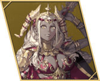

Theodora
- Chinese name
- 赛奥朵拉
- Game8 tier
- Lord
- Used in
- Path 3: Theodora, Part III: Squad B · Trident
- Personal abilities
- Royal Resolve (30% chance to halve damage), Direct Hit, Unstoppable Force
- Boons
- Authority, White Magic, Spear
- Banes
- Black Magic
- Likes
- Fighting, seeing the people of Saramis thrive
Growth rates
| HP | Str | Mag | Spd | Dex | Def | Res | Lck | Cha |
|---|---|---|---|---|---|---|---|---|
| 70 | 50 | 30 | 40 | 40 | 40 | 30 | 30 | 50 |
Gifts they like
- Really liked
- Dagda Beard Grass, Eastern Black Silk, Eastern Tea Leaves, Horse-Grooming Kit
Paired ending
Their only listed ending partner is Eshmel, who is paired elsewhere in this plan. See the Supports page to swap.
Builds
Path 3: Theodora (Hard)
- Gladiator Beginner start
ranks: Gauntlet D / Axe D / Sword D - Armored Ornius Rider Specialty Lv20
ranks: Riding D; Axe C / Spear C - Guardian Advanced Lv35 (after unlock)
ranks: Spear B · unlock on Dietrich: Renown 6 challenge, or Theodora: 10 War Preparations tasks
- Joins
- Lord
- Role
- Lance tank
- Train
- Spear to B, Riding to D.
- Gear
- Spears; Pilum from Theodora's paralogue.
- Mount etc.
- Battalion on her once she's infantry (Guardian).
- Level in
- Gladiator: HP 80% · Def 40% · Res 30%
Armored Ornius Rider: HP 80% · Def 50% · Res 30%
Guardian: HP 80% · Def 50% · Res 45% - Master here
- Armored Ornius Rider → Sense Threat (Avo +20 vs foes effective against you); Guardian → Brace (Prt +3 after a kill until next phase)
- Farm only
- Cataphract → Pavise (20%: halve physical damage); Bardinger → Aegis (20%: halve magic damage)
- Equip order
- Royal Resolve → Direct Hit → Unstoppable Force → Pavise → Brace → Aegis → Spear Lv. 3 at B+ (Hit/Avo +5)
- Why
- Game8's line. Part III: Sentinel → The Trident.
Part III: Squad B · Trident (Hard)
- Guardian Advanced from Theodora's path
ranks: Spear B · unlock on Dietrich: Renown 6 challenge, or Theodora: 10 War Preparations tasks - Sentinel Master Lv45
ranks: Spear A - The Trident Divine Section 4+, licence item
ranks: Spear S · Trident — Disciples' Chambers
- Joins
- Squad B · Trident
- Train
- Sentinel: Spear A · The Trident: Spear S
- Gear
- Angel-type lance plus a defense skill (CN). Don't make her heavy armor.
- Level in
- Guardian: HP 80% · Def 50% · Res 45%
Sentinel: HP 85% · Def 50% · Res 45%
The Trident: HP 85% · Def 55% · Res 45% - Carried in
- Armored Ornius Rider → Sense Threat; Cataphract → Pavise; Bardinger → Aegis
- Master here
- Guardian → Brace (Prt +3 after a kill until next phase); Sentinel → Resolute Stance (Shld +5 at full HP); The Trident → Divine Wall (Def +10)
- Farm only
- Armored Knight → Great Counter (Atk +3 when the foe attacks first)
- Equip order
- Royal Resolve → Direct Hit → Unstoppable Force → Divine Wall → Resolute Stance → Pavise → Spearfaire at S+ (Hit/Avo +10, Atk +3)
- Why
- Tank and healer. Low Speed means few follow-ups.